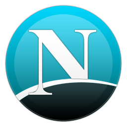

Netscape

Origem - Em 23 de janeiro de 1993, Marc Andreessen, pesquisador do Centro Nacional de Supercomputação Aplicada (NCSA) da Universidade de Illinois, anunciou em um grupo de discussão da Usenet que estava disponibilizando para download o navegador X Mosaic. Na época, a Internet ainda era uma ferramenta restrita ao universo acadêmico e o X Mosaic não era o primeiro navegador — havia, por exemplo, os navegadores Midas, Cello, ViolaWWW e WorldWideWeb. A grande inovação do X Mosaic a disponibilidade em várias plataformas, facilidade de instalação e de uso além de vários recursos multimídia. Com isso, surgia a estrutura básica para que a Internet viesse a se desenvolver fora das Universidades.
Um ano depois, Jim Clark, fundador da Silicon Graphics, procurou Andreesen. Seu objetivo era formar uma nova companhia. Do encontro entre ambos, surgia a Mosaic Communications, logo rebatizada para Netscape Communications. O sucesso foi imediato e a empresa recém fundada passou a dominar o mercado de navegadores. Em 1995, a Netscape Communications aparecia cotada em Wall Street — o que demonstrava não apenas sua própria vitalidade mas também a vitalidade da nova economia mundial.
Usabilidade – Plataforma web.
Funcionalidades - Netscape ISP é um serviço dial-up oferecido à 9,95 dólares por mês. A empresa atende a páginas da web em um formato comprimido para aumentar a velocidade efetiva de até 1300 kbit/s (média de 500 kbit/s). O prestador de serviços de Internet é executado pela AOL sob a marca Netscape. Netscape sempre levou grande quantidade de tráfego de vários links incluídas nos menus do navegador para as suas propriedades web. Alguns dizem que era muito tarde para aproveitar este tráfego para o que seria o início das grandes guerras online do portal. Quando isso acontecia, Netcenter, o novo nome para o seu site (http://home.netscape.com/) notório entrou na corrida com o Yahoo!, Infoseek, e MSN, que o Google só juntou anos mais tarde. Netscape também opera o site Propeller, que é um agregador de notícias sociais, similar ao Digg e, formalmente conhecida como Netscape.com entre junho de 2006 a setembro de 2007.